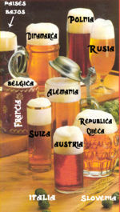

De: La Frikipedia, la enciclopedia extremadamente seria.
De: La Frikipedia, la enciclopedia extremadamente seria. De: La Frikipedia, la enciclopedia extremadamente seria.
| De la serie Países del planeta tierra: | |||||
| Guiriland | |||||
|---|---|---|---|---|---|
| |||||
| Lema: Sangraia, plís! | |||||
| Himno: Asturias, Patria Querida
| |||||
| 
| |||||
| Capital | Madrid | ||||
| Mayor ciudad | Barcelona | ||||
| Lenguas oficiales | Inglés, Alemán, Holandés, Belga y Japonés | ||||
| Gobierno | Anarquía Constitucional | ||||
| Barman | Moe | ||||
| Área | Los metros cuadrados que ocupa el pub local | ||||
| Población | Unos chopocientos repartidos por esos mundos | ||||
| Moneda | Da igual, lo gastarán todo | ||||
| Zona horaria | La del país en el que se encuentren | ||||
| Dominio Internet | .gui | ||||
| Código telefónico | No usan, se comunican con gritos
| ||||
| Notas: Eso tú, gilipuertas | |||||
Guiria es un país que limita al norte con Gran Bretaña, al este con Japón y al otro con Alemania. Sus habitantes se denominan guiris.
El tipo racial de los guiris es predominantemente anglosajón, con abundante presencia de cabellos rubios y pieles claras. Esta variedad de guiris, a diferencia del resto de los mortales e incluso de algunos inmortales, no poseen melanina sino otra proteína llamada langostina, que en vez de hacer que se pongan morenos los convierte en unos esperpentos de color rosa fosforescente.
En Guiria se da otro tipo racial que convive con el anteriormente descrito y que contrasta enormemente con él. Éstos son bajitos, de pelo negro y ojos rasgados.
Guiria es el principal importador mundial de sangría. El licor llega al país debidamente almacenado en los estómagos y venas de sus habitantes, que recorren a tal fin todos los rincones del globo.
La economía de la sociedad guiri está basada en un sistema llamado vacacionismo: en Guiria es vacaciones todo el año (salvo un período de descanso de un mes), y todos sus habitantes lo pasan fuera de su tierra, comprando alimentos y otros bienes. Guiria no produce nada, todo se importa. En este sistema, la población está fuertemente compartimentada según su origen racial. Los guiris anglosajones se encargan del alimento, pues sus orondos cuerpos pueden almacenar volúmenes que resultarían imposibles para cualquier otro ser humano. Los guiris de tipo oriental son los responsables de la cultura y el arte. Dedican todo su tiempo a hacer fotografías de monumentos extranjeros y a reproducirlos luego en Guiria.
El fútbol es el deporte nacional de Guiria, al menos el de los guiris anglosajones. Los guiris orientales gustan del sumo, a diferencia de los otros, que prefieren la chevecha.
El traje típico de Guiria consta de guayabera de flores (esto es quizá una reminiscencia de antiguos cultos guiris a la fecundidad de la tierra; el significado exacto se les escapa a los antropólogos, aunque ya lo han metido en una jaula para que no se les vuelva a escapar), gafas de sol, gorra de béisbol, bermudas, cámara fotográfica, calcetines y chanclas por encima. Este último ornamento (calcetines con chanclas) es uno de los rasgos más distintivos de la cultura guiri y lo lucen con orgullo por donde quiera que van, permitiendo reconocerles fácilmente.
Su música consta fundamentalmente de himnos futbolísticos y cánticos guturales cuyo remoto origen se pierde en la noche de los tiempos. Los guiris ejecutan vistosas danzas rituales de carácter multitudinario, en templos llamados estadios. Para ello se engalanan con bufandas, gorras e instrumentos musicales de viento. Estas ceremonias, por otra parte, son universales, dado que las ejecutan también muchos otros pueblos del mundo, cada uno con sus especificidades y localismos (varían, por ejemplo, los colores de los ornamentos tribales y el mayor o menor grado de afición a romperle las espinillas al contrario).
Todo ello se realiza, claro está, en los momentos de ocio, cuando no se está en el lugar de trabajo (uséase, en el pub).
También llamados hooligans, guinis o caris. Por supuesto, en Guiria también existen. Son más refinados que los hispánicos, aunque igual de tontos. Nunca te dan una hostia sin tratarte de sir por lo menos, y por supuesto, nada de peleas a la hora del té. Esta subespecie tiene como hábitat principal los pubs, en los que se recluyen hasta las tantas. Van en manadas, claro, pues como todos los canis son animales gregorios.
Autor(es):